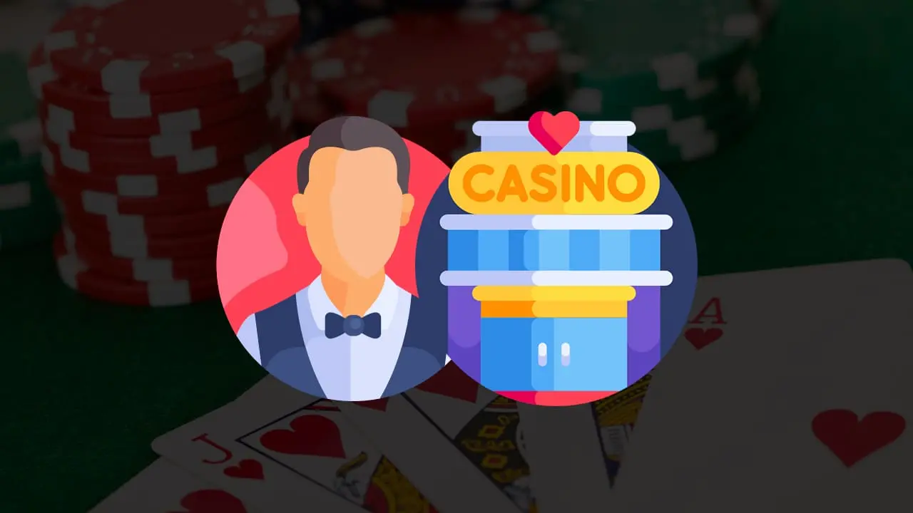
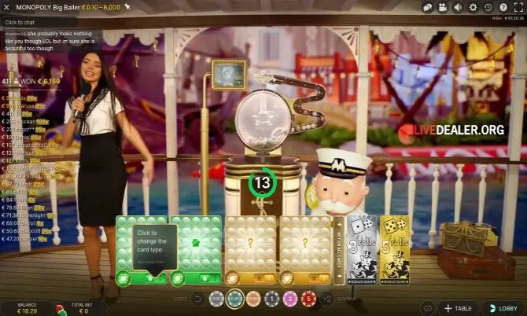
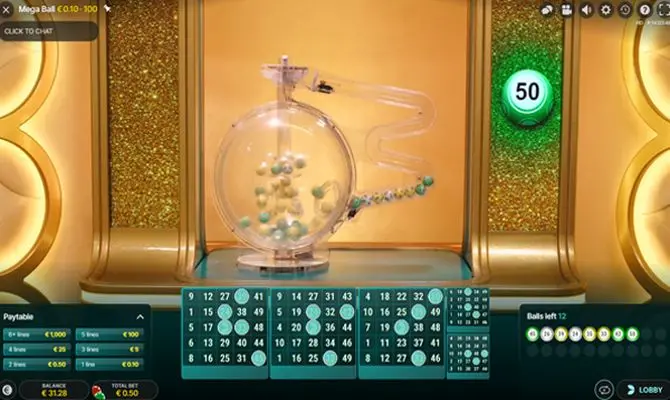
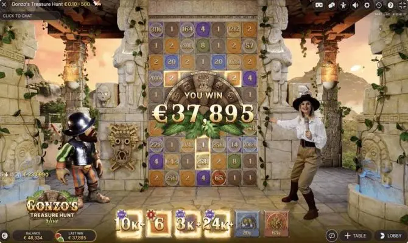
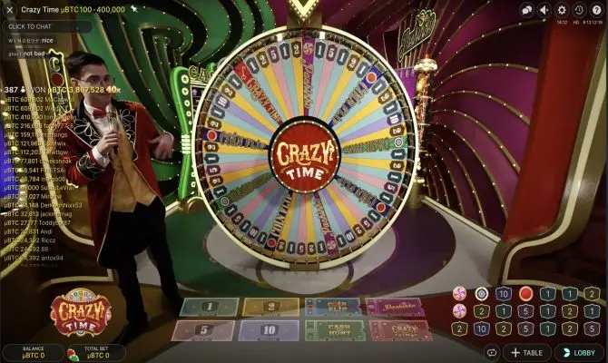

Die besten Live-Casino-Spielshows zum Spielen für 2023
Einer der meistbesuchten Teile fast aller Online-Casinos ist ohne Zweifel der Live-Casino-Teil. Neben einer Reihe bekannter Tischspiele wie Blackjack, Roulette und Baccarat können Sie hier auch eine Vielzahl an Spielshows spielen. Das Schöne am Spielen von Live-Casino-Spielshows ist, dass sie oft auf bekannten Brettspielen, Poker oder Spielshows basieren, die Sie im Fernsehen sehen können. Die Live-Spielshows sind so angepasst, dass Sie sie normalerweise mit mehreren Spielern spielen können. Alle Spiele werden von einem echten Spielleiter geleitet, der das Spiel von einem Spielstudio oder einem Raum in einem landbasierten Casino aus leitet.
Einige Online-Casinos haben eine relativ kleine Auswahl an Spielshows, während wiederrum andere Casinos eine riesige Auswahl an Live-Spielen und Live-Casino-Spielshows anbieten. Sie werden jedoch in fast jedem Online-Casino, das eine Live-Spielshow anbietet, eine vielzahl von Spielshows finden. Wir haben sie für Sie aufgelistet, zusammen mit einer kurzen Erklärung.
Mega Wheel Live
Die Spielshow Mega Wheel Live ist eine relativ einfache Version der bekannten Fernsehsendung Rad van Fortuin (Glücksrad). Ein großes Rad zeigt 8 verschiedene Multiplikatoren, auf die Sie wetten können. Diese variieren vom 1-fachen Ihres Einsatzes bis maximal zum 40-fachen Ihres Einsatzes. Je höher der Wert des Multiplikators ist, desto seltener erscheint er auf dem großen Rad. Sie gewinnen dann den Multiplikator, auf dem das Rad stehen bleibt. Es gibt auch zwei Spielautomaten mit einem Bonusmultiplikator. Dies multipliziert den gewonnenen Betrag in der nächsten Runde, sofern Sie auf richtige Zahl setzen.
Charakteristisch für diese Live-Spielshow ist, dass es sich um ein schnelles und einfaches Spiel handelt, bei dem Sie die Gewinnchancen bestimmen. Wenn Sie auf einen 1-fachen Multiplikator Ihres Einsatzes setzen, erhalten Sie mehr Gewinne, aber Ihre Gewinne werden relativ niedrig sein.
Monopoly Big Baller
Beim Live-Monopoly Big Baller spielen Sie eine Kombination aus Bingo und dem Monopoly-Spiel. Sie spielen das Spiel mit vier regulären Bingokarten und zwei Bonuskarten. Die Bonuskarten haben 3 und 5 Zahlen, während die anderen vier Karten nur die Standard-Bingokarten sind. Während des regulären Bingospiels gibt es Multiplikatoren, die Ihnen ziemlich schöne Gewinne einbringen können, aber das i-Tüpfelchen bei diesem Spiel ist, das Sie es schaffen, eine der beiden Bonuskarten zu füllen. Sie können dann Live-Monopoly spielen und große Multiplikatoren bis zum 500-fachen Ihres Einsatzes gewinnen.
Wenn Sie die Bingokarte mit 3 Zahlen füllen, können Sie dreimal würfeln und wenn Sie eine volle Karte mit fünf Zahlen gewinnen, können Sie fünfmal würfeln. Während Sie Monopoly spielen, werden alle Gewinne, die Sie erziehlen, zusammengezählt und Ihrem Spielguthaben nach fünf Würfen hinzugefügt.
Mega Ball
Das Live-Spiel Mega Ball ist eine Bingo-Variante, die Multiplikatoren verwendet. Sie können mit mehreren Karten spielen, wobei die Karte mit dem höchsten Potenzial größer als die Karten angezeigt wird, sodass weniger Zahlen durchgestrichen werden können. Sie können mit bis zu 100 Bingokarten spielen und so Ihre Gewinnchancen erheblich erhöhen.
Charakteristisch für das Spiel Mega Ball Live ist, dass es etwas abwechslungsreicher ist als das Spielen mit 1 Karte und dass man recht hohe Gewinne erzielen kann.
Gonzo’s Treasure Hunt Live
Nicht viele Spielshows basieren auf bestehenden Video-Slots, aber diese Spielshow ist es. Gonzo’s Quest ist einer der meistgespielten Video-Slots und das brachte die Entwickler von Spielshows auf die Idee, diesen Video-Slot in eine echte Live-Casino-Spielshow zu integrieren. Bei Gonzo’s Treasure Hunt müssen Sie auf einer riesigen Spielwand maximal zehn Felder auswählen, auf die Spielsymbole fallen. Sie bestimmen Ihren Einsatz pro Symbol und gewinnen den entsprechenden Multiplikator. Und dann bleibt natürlich zu hoffen, dass der höchste Multiplikator auf eine der von Ihnen gewählten zehn Boxen fällt.
Charakteristisch für dieses Spiel ist, dass Sie mit relativ niedrigen Einsätzen manchmal riesige Summen gewinnen können. Dies liegt daran, dass die Multiplikatoren manchmal ziemlich hoch sein können, bis zum 500-fachen Ihres Einsatzes.
Crazy Time Live
Das Live-Casinospiel Crazy Time ist vergleichbar mit dem Mega Wheel, nur gibt es weniger Multiplikatoren und das Spiel wurde um zwei Bonusoptionen erweitert, auf die man Wetten kann. Wenn das Rad auf diesen Bonusfeldern stehen bleibt, gewinnen Sie das entsprechende Bonusspiel. Mit diesen Bonusspielen können Sie große Multiplikatoren gewinnen, die bis zum 200-fachen Ihres Einsatzes gehen können. Dies gilt auch für die Crazy Time Spielshow, die Sie in einem Bitcoin Casino spielen können
Charakteristisch für das Spiel Crazy Time ist, dass es sich hauptsächlich um ein sehr einfaches Spiel handelt, bei dem man keine allzu hohen Summen gewinnen kann, aber auch kein großes Risiko eingehen muss.
Tipps zum Spielen von Live-Casino-Spielshows
Wenn Sie noch nie an einer Live-Casino-Spielshow teilgenommen haben, gibt es eine Reihe von Dingen, die Sie berücksichtigen sollten. Beispielsweise haben Sie bei fast allen Spielshows nur eine begrenzte Zeit, um Ihre Wetten zu platzieren. Wenn Sie zu lange warten, verpassen Sie möglicherweise eine Gelegenheit, weil Sie nicht teilnehmen können und auf die nächste Runde warten müssen. Außerdem raten wir Ihnen, immer mit niedrigen Einsätzen zu beginnen und erst zu erhöhen, wenn Sie es geschafft haben, etwas Gewinn zu machen.
Als letzten Tipp möchten wir Ihnen raten, beim Spielen von Live-Spielshows immer Ihr Spielguthaben im Auge zu behalten. Aufgrund der Geschwindigkeit und Aufregung beim Spielen kann Ihr Spielguthaben manchmal sehr schnell verbraucht sein. Im positiven Sinne, aber auch im negativen Sinne. Wenn es eine Zeit lang nicht so gut läuft, kann es sein, dass Sie Ihr Spielguthaben schnell aufgebraucht haben.
Wählen Sie das richtige Casino!
Wie wir bereits erwähnt haben, hat nicht jedes Online-Casino alle Live-Casino-Spielshows im Spielangebot enthalten. Für die Verwaltung der Spielshows sind verschiedene Entwickler zuständig und nur Live-Casino-Spielshows von Entwicklern, mit denen ein Online-Casino zusammenarbeitet, werden in das Spielangebot aufgenommen.